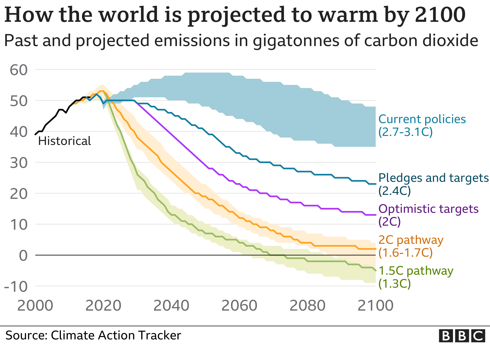

Climate pledges tough to secure before COP26 summit, PM warns

There is a "six out of 10" chance of getting other countries to sign up to financial and environmental targets ahead of November's key COP26 climate change conference, the UK PM has said.
But he said it would be "tough" to persuade allies to meet their promise to give $100bn a year to developing nations to cut carbon emissions.
The UK is hosting COP26 in Glasgow.
With some 100 world leaders expected in New York at the UN General Assembly this week, Mr Johnson will seek to galvanise action during a series of high-level meetings.
Speaking during his flight Mr Johnson told reporters: "I think getting it all done this week is going to be a stretch. But I think getting it all done by COP, six out of 10.
"It's going to be tough but people need to understand that this is crucial for the world."
Downing Street has said developed countries have "collectively failed" on their $100bn (£73bn) target, with OECD figures last week showing that only $79.6bn in climate finance was mobilised in 2019 .

COP26 president Alok Sharma, who is with the PM, earlier revealed that Chinese President Xi Jinping has not yet committed to attending the conference.
Mr Johnson said Mr Sharma had had "some great conversations already with his Chinese counterparts about the things they want to do".
"I think China is massively important to this and I think China shows real signs of making progress," he added.
Mr Johnson also insisted new International Development Secretary Anne-Marie Trevelyan would do an "outstanding job" after social media posts emerged showing her previously denying climate change.
"I don't want to encourage you but if you were to excavate some of my articles from 20 years ago you might find some comments I made... about climate change that weren't entirely supportive of the current struggle," he said.
"But the facts change and people change their minds and change their views."
Mr Johnson will also travel to Washington where he will meet US President Joe Biden in the White House for the first time.
The prime minister is likely to push for a restoration of UK-US travel, with Mr Biden's administration having maintained a ban despite travel restrictions being eased elsewhere.
Alex Therrien, 'Climate pledges tough to secure before COP26 summit, PM warns', 2021. [Online]. Available: https://www.bbc.com/news/uk-politics-58620566. [Accessed: 19 Sep 2021].